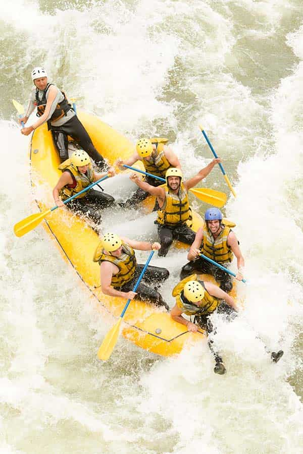

Prepare-se para uma experiência inesquecível em meio à natureza! Na Potengi Rafting, você encontrará emoção, aventura e muita diversão enquanto desce o Rio Potengi enfrentando suas incríveis corredeiras. Nossa missão é proporcionar uma experiência emocionante, segura e inesquecível para nossos clientes.